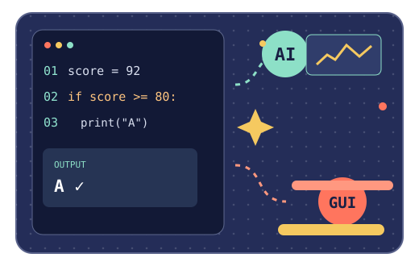

ค่อย ๆ คิด แล้วค่อยเขียน
รู้จัก Python
แล้วไปต่อถึง AI
20 บทเรียน80+ แบบฝึกหัด4 ช่วงการเรียนรู้

THE ROADMAP
จากตัวแปรหนึ่งตัว
ถึงโปรเจกต์ที่ใช้งานได้
01 Python core→02 Tools & data→03 AI practice→04 GUI project
COURSE INDEX · 20 CHAPTERS
เลือกบทเรียนของคุณ
เลือกบทจากเมนูด้านซ้าย หรือค้นหาและกรองตามช่วงการเรียนรู้
อ่านไป ลองรันไป
ทุกตัวอย่างมี source code และผลลัพธ์อยู่ข้างกัน กดคัดลอกโค้ดไปทดลองในเครื่องได้เลย